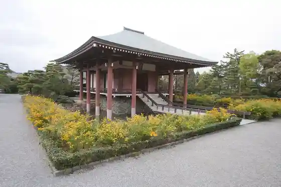
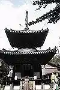
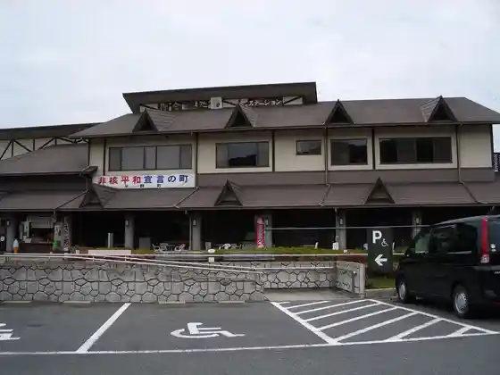
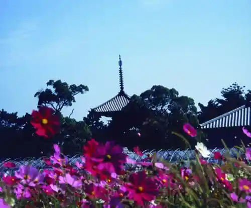

Mimuro Yama
Ikaruga, Nara · 0745-74-6800 · Official / source link
Chugu Tera
Ikaruga, Nara · 0745-75-2106 · Official / source link

Yoshida Tera
Ikaruga, Nara · 0745-74-2651 · Official / source link

Ikaruga Bunkazai Katsuyo Center
Ikaruga, Nara · 0745-70-1200 · Official / source link

Hoki Tera
Ikaruga, Nara · 0745-75-5559 · Official / source link

Horin Tera (Ikaruga)
Ikaruga, Nara · 0745-75-2686 · Official / source link
Horyuji
Ikaruga, Nara · 0745-75-2555 · Official / source link
Tatsuta Kawa
Ikaruga, Nara · 0745-74-6800 · Official / source link
Fuji no Ki Burial Mound
Ikaruga, Nara · 0745-74-1001 · Official / source link
Tatsuta Shrine
Ikaruga, Nara · 0745-75-3163 · Official / source link